<meta charset="utf-8"><style>body{font:14px sans-serif;background:#f4f6f5}main{display:grid;grid-template-columns:repeat(2,660px);gap:16px}section{display:grid;grid-template-columns:repeat(4,160px);gap:5px}h3{grid-column:1/-1;margin:0}img{width:160px;background:white}figure{margin:0}figcaption{font-size:11px}</style><main><section><h3>柴染棕</h3><figure>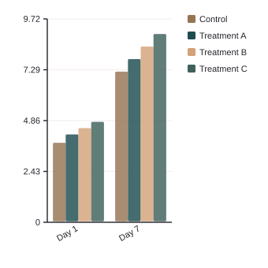<figcaption>bar before</figcaption></figure><figure>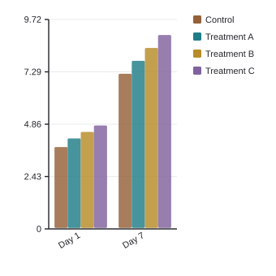<figcaption>bar after</figcaption></figure><figure>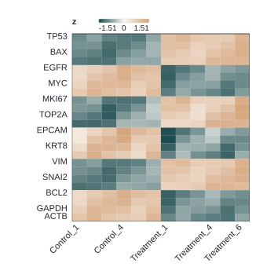<figcaption>heatmap before</figcaption></figure><figure>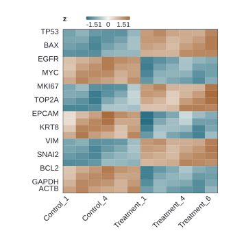<figcaption>heatmap after</figcaption></figure></section><section><h3>橙绯红</h3><figure>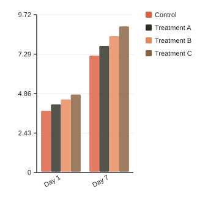<figcaption>bar before</figcaption></figure><figure>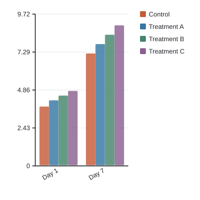<figcaption>bar after</figcaption></figure><figure><figcaption>heatmap before</figcaption></figure><figure>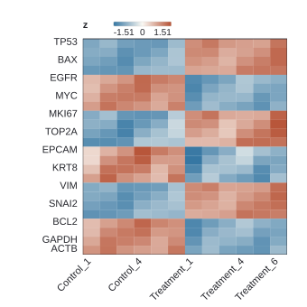<figcaption>heatmap after</figcaption></figure></section><section><h3>淡藤萝紫</h3><figure>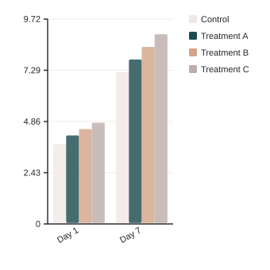<figcaption>bar before</figcaption></figure><figure>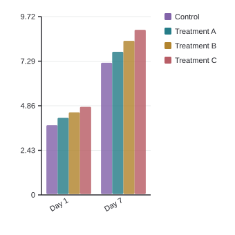<figcaption>bar after</figcaption></figure><figure>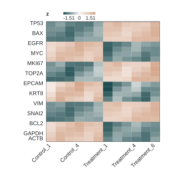<figcaption>heatmap before</figcaption></figure><figure>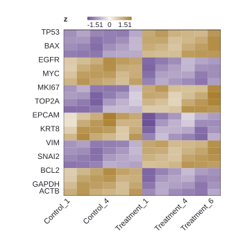<figcaption>heatmap after</figcaption></figure></section><section><h3>瓜瓤粉</h3><figure>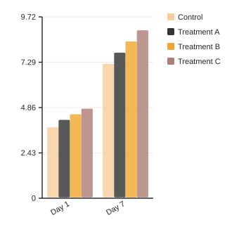<figcaption>bar before</figcaption></figure><figure>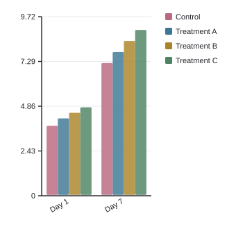<figcaption>bar after</figcaption></figure><figure>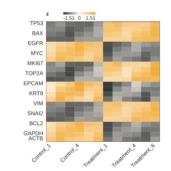<figcaption>heatmap before</figcaption></figure><figure>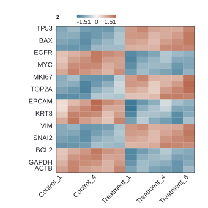<figcaption>heatmap after</figcaption></figure></section><section><h3>蓝墨茶</h3><figure>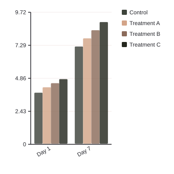<figcaption>bar before</figcaption></figure><figure>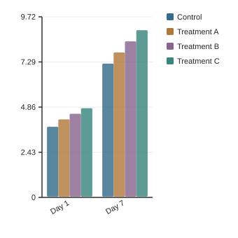<figcaption>bar after</figcaption></figure><figure><figcaption>heatmap before</figcaption></figure><figure>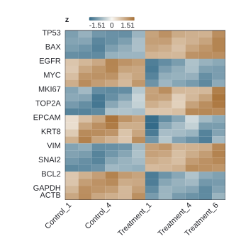<figcaption>heatmap after</figcaption></figure></section><section><h3>棉絮灰</h3><figure>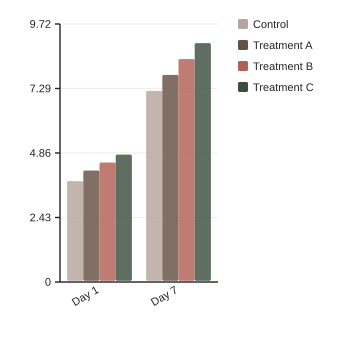<figcaption>bar before</figcaption></figure><figure>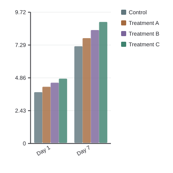<figcaption>bar after</figcaption></figure><figure>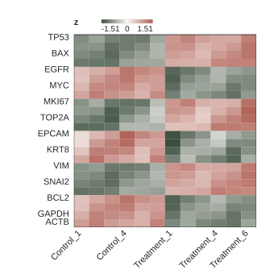<figcaption>heatmap before</figcaption></figure><figure>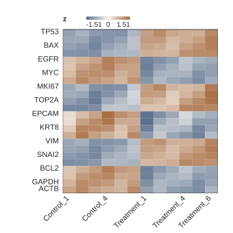<figcaption>heatmap after</figcaption></figure></section><section><h3>珊瑚朱</h3><figure><figcaption>bar before</figcaption></figure><figure>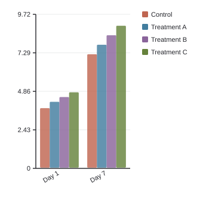<figcaption>bar after</figcaption></figure><figure>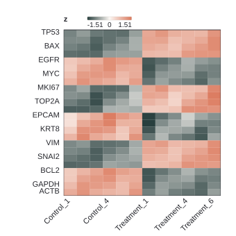<figcaption>heatmap before</figcaption></figure><figure>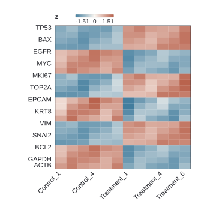<figcaption>heatmap after</figcaption></figure></section><section><h3>杏叶黄</h3><figure>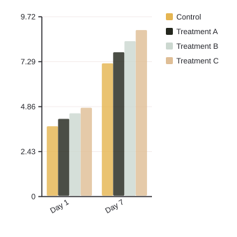<figcaption>bar before</figcaption></figure><figure>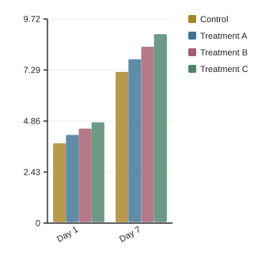<figcaption>bar after</figcaption></figure><figure>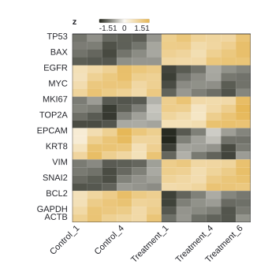<figcaption>heatmap before</figcaption></figure><figure>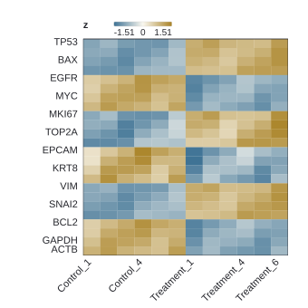<figcaption>heatmap after</figcaption></figure></section></main>